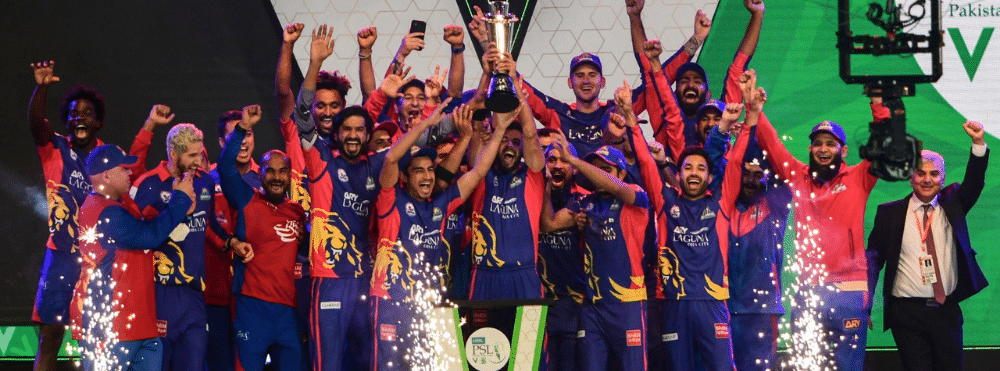

1 / 3

2 / 3

3 / 3

Karachi Kings (Urdu: کراچی کنگز; Sindhi: ڪراچي ڪنگز) (abbreviated as KK) is a Pakistani professional franchise Twenty20 cricket team that competes in the Pakistan Super League (PSL). The team is based in Karachi, the provincial capital of Sindh,and was formed in 2015 by the Pakistan Cricket Board (PCB).
The team's home ground is the National Stadium.
The team is currently coached by Johan Botha . They won their first PSL title in PSL V after beating their rivals Lahore Qalandars in the final on 17 November 2020.
The leading run-scorer for the side is Babar Azam, while Mohammad Amir is the leading wicket-taker.
On 3 December 2015, the PCB announced the owners of the initial five city-based franchises. The Karachi franchise was sold to the ARY Media Group for US$26 million for a ten-year period making it the most expensive franchise in the tournament.However, in 2017, new franchise Multan Sultans replaced Karachi Kings as the most expensive team in PSL history after the team was sold for US$41.6 million for an eight-year agreement.

Captain : IMAD WASIM
Coach : JOHAN BOTHA
Owner : SALMAN IQBAL
City : KARACHI, SINDH, PAKISTAN
Founded 2015; 8 years ago
NATIONAL BANK CRICKET ARENA
Capacity 34,228
PSL wins 1 (2020)
Official website: kk Official
The Kings kicked off their campaign with an easy win against the Lahore Qalandars at the Dubai International Cricket Stadium, with Mohammad Amir getting a hat-trick.
The Kings only won one more match during the group stage of the tournament, finishing with two wins and six losses. They finished fourth in the league table however, above Lahore Qalandars with a better head-to-head record, and qualified for the league play-off stage.
Ravi Bopara replaced Shoaib Malik as the team captain ahead of the qualifier match against Islamabad United. After being restricted to their lowest score of the tournament (111), Karachi were defeated by nine wickets in the 15th over and were eliminated from the tournament.
Kumar Sangakkara and Babar Azam joined Karachi for the second season of the PSL whilst Azhar Mehmood signed on as a coach. Sohail Tanvir was traded for Chris Gayle of the Lahore Qalandars during the off-season trade window. During the 2017 PSL players draft,
Karachi retained Shoaib Malik, Imad Wasim, Ravi Bopara, Mohammad Amir, Sohail Khan, Saifullah Bangash, and Shahzaib Hasan. The team added nine players to the squad, including Kieron Pollard, Mahela Jayawardena and Ryan McLaren.
In their first game, Karachi Kings lost to Peshawar Zalmi by 7 wickets in a one-sided affair that saw them post a target of just 118 runs in their 20 overs.[12] In the following game, against the Quetta Gladiators, the Kings failed to defend 160 and lost by 7 wickets
yet again.Even as the tournament progressed to Sharjah, the Kings continued their losing streak. Facing a loss this time to arch-rivals, Lahore Qalandars. The match was closely fought and a partnership of 101 runs between veterans Kumar Sangakkara and Shoaib Malik almost
won it for the Kings. But in the end they fell short of the target of 180 by 7 runs.[14] But in the next game, against defending champions Islamabad United. The team finally managed to put themselves on the points table. The win came through the Duckworth-Lewis method as
the Kings were ahead of the par score by 8 runs when returning rain forced to abandon the already 13-over match.[15] In their final game of the Sharjah leg, the Kings continued their winning streak to get past Peshawar Zalmi in a thrilling contest. Setting up a target of 175, the
Kings had the Zalmis reduced to 69-6 before Shahid Afridi and Darren Sammy combined in a 70-run partnership that almost won the game for the Zalmis. However, the Kings' bowling prevailed in the end to give their team a 9-run victory.
On 7 April 2017 Shahid Afridi joined the team as president and player, and left Peshawar Zalmi.[21] Mitchell Johnson was replaced by Tymal Mills as he pulled out from the tournament a month before 2018 season. In their opening match of the 2018 season, Kings ended the two-season losing streak against Quetta Gladiators by beating them by 19 runs.[22] In their next game, the Kings continued their winning form by beating the defending champions, Peshawar Zalmi, in a closely fought game. Chasing a target of 132 runs, the team won with 2 balls and 5 wickets to spare.[23] Their next game was against arch-rivals, Lahore Qalandars. Batting first, the Kings posted 159 for 9 on the board thanks to Bopara's unbeaten innings of 50 runs. In reply, the Qalandars got off to a great start, and were 68 for 1 inside 6 overs, but 3 quick wickets from man of the match, Shahid Afridi, ensured a third consecutive win for his side as the Qalandars fell short by 27 runs. The Kings got eliminated in the match second eliminator match played at Lahore on 21 March 2018 against Peshawar Zalmi.
Before the 2019 season, Wasim Akram joined the franchise as president
In PSL V, Karachi Kings reached the finals for the first time in PSL history after defeating the Multan Sultans in the qualifier match that went into a Super Over. They also went on to win the PSL V under the leadership of Imad Wasim. Karachi Kings defeated the Lahore Qalandars by five wickets in the final to win their maiden PSL title.
In the 2021 season of PSL, Karachi Kings had an excellent kickstart with winning their first match of the season against Quetta Gladiators.

| Player | Type | Country |
|---|---|---|
| IMAD WASIM (C) | ALL-ROUNDER | PAKISTAN |
| MATTHEW WADE | WICKET-KEEPER | AUSTRALIAN |
| IMRAN TAHIR | BOWLER | SOUTH AFRICA |
| HAIDER ALI | BATTER | PAKISTAN |
| JAMES VINCE [PARTIAL] | BATTER | ENGLAND |
| JAMES FULLER | ALL-ROUNDER | SOUTH AFRICA |
| ANDREW TYE | BOWLER | AUSTRALIAN |
| SHOAIB MALIK | BATTER | PAKISTAN |
| MOHAMMAD AMIR | BOWLER | PAKISTAN |
| TAYYAB TAHIR | BATTER | PAKISTAN |
| MOHAMMAD AKHLAQ | WICKET-KEEPER | PAKISTAN |
| SHARJEEL KHAN | BATTER | PAKISTAN |
| MIR HAMZA (INJURED) | BOWLER | PAKISTAN |
| AAMIR YAMIN | ALL-ROUNDER | PAKISTAN |
| IRFAN KHAN NIAZI | BETTER | PAKISTAN |
| QASIM AKRAM | ALL-ROUNDER | PAKISTAN |
| TABRAIZ SHAMSI | BOWLER | SOUTH AFRICA |
| MUHAMMAD UMAR | BOWLER | PAKISTAN |
| BEN CUTTING | ALL-ROUNDER | AUSTRALIAN |
| MUSA KHAN | BOWLER | PAKISTAN |